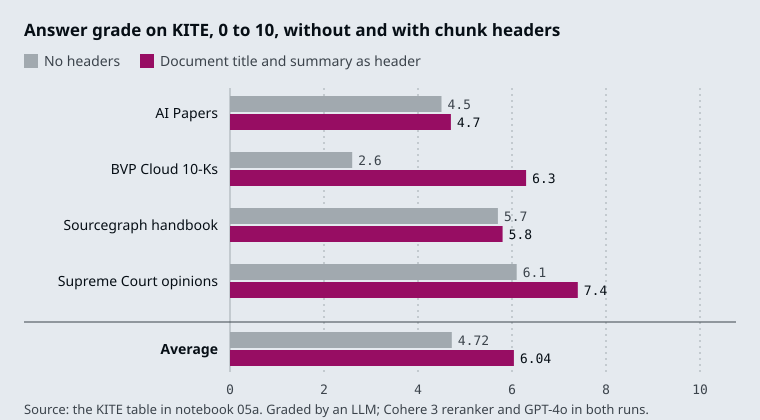

The running example is one 2,184-character page of the Larkspur Cloud handbook with three sections: “Refunds and cancellations” (the M13 section), “Outages and service credits” and “Data export and retention”. It has three golden questions: How long do I have to get a full refund on an annual plan?, Do I get service credits automatically after an outage? and What happens to my data after I cancel my plan?
TL;DR
- The search key and the payload can differ. The key is whatever gets embedded: a small child chunk, a summary, a list of generated questions, or a chunk with context prepended. The payload is what the model reads: a parent chunk, a whole document, the original chunk. An id stored with each key points at its payload.
- Parent-document retrieval searches small and returns large. In the lab at child 150 and parent 600, the top 2 children contain the whole answer for 0 of the 3 golden questions (about 53 tokens on average); their parents contain it for 3 of 3 (about 206 tokens).
- Parent size is a cost dial with an edge. With the whole page as the parent, every question costs 546 tokens. With parents of 400 characters, the parent splitter cuts the outage answer in two, and no parent returns it whole.
- An LLM can write the key at index time. Summaries (16.1, 16.3) and hypothetical questions (16.4) cost one LLM call per chunk or document, paid once, and are only as good as what the LLM kept.
- Context in the chunk fixes chunks that never name their subject. In notebook 05a a document title raises a chunk’s reranker relevance from about 0.1 to 0.92. Anthropic reports that contextual embeddings reduced top-20 retrieval failures by 35%, and by 49% with contextual BM25.
Mental model
- The 2,184-character page is cut twice: into 5 parents of up to 600 characters, then each parent into children of up to 150.
- The parents go into the docstore, each under its own id. They are the payload.
- The 19 children are embedded into the vector index, each with its parent’s id in its metadata. They are the search keys.
- The refund question is matched against the children only. Child #5, 145 characters, scores best at 0.630.
- The retriever reads child #5’s parent id and fetches P2 from the docstore.
- The model reads P2, 523 characters with the whole answer, where child #5 alone stopped before the 100 GB condition.
At index time the document is written twice: once as payloads into the docstore and once as search keys into the vector index, each key carrying its payload’s id. At query time the question meets only the keys, and the model meets only the payloads. Every technique in M16 is a choice of key, a choice of payload, or both; the retrieval code in between stays the same.
Search key vs payload
Lesson 16.1: Multi-representation indexing: search summaries, return documents. Notebooks: 01a_multi_representation_indexing.ipynb
A plain index stores one text per entry and uses it twice: its embedding is matched against the question, and the text itself goes into the prompt. Those two jobs pull in opposite directions. Matching works best on short, focused text, because one vector has to stand for the whole entry. Answering works best on complete text, because the model can only use what it reads.
Multi-representation indexing gives each job its own text. The search key is embedded and matched; the payload is returned. Notebook 01a uses an LLM summary as the key and the full document as the payload:
flowchart LR
D[/"Document"/] --> S["LLM summary<br/>(the key)"]
D --> F["Full text<br/>(the payload)"]
S --> V[("Chroma<br/>summary vector<br/>+ doc_id")]
F --> B[("InMemoryByteStore<br/>doc_id → document")]
Q[/"Question"/] --> V
V -- doc_id --> B
The pieces, as the notebook wires them:
| Piece | In notebook 01a | Job |
|---|---|---|
| Vector store | Chroma(collection_name="summaries") |
Holds summary embeddings only |
| Docstore | InMemoryByteStore() |
Holds the full documents, keyed by id |
| Link | id_key="doc_id", one uuid4 per document |
Stored in each summary’s metadata |
| Retriever | MultiVectorRetriever(vectorstore=…, byte_store=…, id_key="doc_id") |
Searches summaries, returns documents |
The notebook loads two LangChain blog posts, splits them at chunk_size=10000, which leaves three pieces (the 11,652-character LangSmith post becomes two), and summarises each piece with gpt-3.5-turbo and the prompt “Summarize the following document”. Two calls show the split. vectorstore.similarity_search("What is LangSmith?") returns a summary, and retriever.invoke("What is LangSmith?") returns the full post that summary points to.
Every technique in this module is a choice of key and payload:
| Lesson | Search key (embedded) | Payload (returned) | Index-time cost |
|---|---|---|---|
| 16.1 | LLM summary | Full document | One LLM call per document |
| 16.2 | Small child chunk | Larger parent chunk or whole document | Splitting only |
| 16.3 | Page summary, then chunks of that page | Chunks | One summary call per page |
| 16.4 | Questions an LLM wrote for the chunk | The chunk | One LLM call per chunk |
| 16.5 | Chunk with a header or written context | The same text | One LLM call per document for a title, one per chunk for context |
For the Larkspur page, a summary of “Refunds and cancellations” is a sharp key for What is your refund policy?. For How long do I have to get a full refund on an annual plan? it depends on what the summariser kept. If the summary mentions the 30-day refund on annual plans, the question matches and the payload brings the 100 GB condition back with it. If the summary covers only monthly plans and cancelling, nothing about annual refunds is left to match. Check a summary key on questions about details as well as questions about topics.
Docstore
Lesson 16.2: Parent-document retrieval, in memory and on Postgres. Notebooks: 02a_parent_document_retrieval.ipynb, 02b_parent_document_retriever_postgres.ipynb (optional)
Parent-document retrieval splits along size instead of meaning. Small child chunks are the search keys; the larger parent each child was cut from is the payload. The vector store holds the children. The docstore holds the parents, keyed by id, and each child carries its parent’s id in its metadata (doc_id by default).
ParentDocumentRetriever.add_documents does the splitting and the bookkeeping:
flowchart LR
D[/"Handbook page<br/>2,184 characters"/] --> P["parent_splitter, 600<br/>5 parents, a uuid each"]
P --> S[("Docstore<br/>uuid → parent")]
P --> C["child_splitter, 150<br/>19 children + doc_id"]
C --> V[("Vector store")]
The counts are the lab’s at child 150 and parent 600. Without a parent_splitter, each original document is the parent. At query time invoke runs a similarity search over the children, collects their parent ids in rank order without repeats, fetches those parents with docstore.mget, and drops any id the docstore does not return.
Notebook 02a runs both shapes on two LangChain blog posts. With only child_splitter at 400, the parents are the two whole posts, so the docstore lists two keys and every answer arrives as a full post. With parent_splitter at 2000 and child_splitter at 400 the parents are 2,000-character sections (ten of them for these two posts), and the retriever is wired into a RetrievalQA “stuff” chain.
The docstore is any BaseStore: four methods, mget, mset, mdelete and yield_keys. The notebooks use InMemoryStore, which disappears when the process stops, while a vector store such as Chroma can persist on disk. A restart then leaves children whose parents are gone, and invoke returns nothing for them, without an error. Optional notebook 02b moves both halves into Postgres: PGVector for the children and a custom PostgresStore that keeps each parent as JSONB in a docstore table.
Check three details in 02b’s store before you copy it:
- Order. The
BaseStorecontract saysmgetreturns one value per key, in key order, withNonefor a missing key. 02b’smgetreturns whatever rows the query yields, in database order, and skips missing keys.MultiVectorRetrieverrelies on that order to keep the parents ranked, so the best parent can arrive second. - Errors. Every method logs exceptions and carries on;
mgetthen returns an empty list. A database outage looks like a question with no context. - Ids.
add_documents(docs, ids=None)gives every parent a freshuuid4on each call. Running ingestion twice stores every parent and child twice. Pass stable ids (one per parent, after the parent splitter) and delete a document’s children and parents together when it changes.
Choosing child and parent sizes
The child size decides what can be matched. The parent size decides what the model reads and what each question costs. The interactive lab runs a port of ParentDocumentRetriever on the Larkspur page with TF-IDF standing in for embeddings and the top 2 children per question, as in the M11 baseline. On all 242 slider settings and all three golden questions it returns the same children, scores and parents as the real retriever (InMemoryVectorStore with scikit-learn TF-IDF vectors): 0 mismatches, scores within 2e-16.
| Child / parent | Children, parents | Answers whole: children only | Answers whole: parents | Mean tokens: children / parents |
|---|---|---|---|---|
| 150 / 600 | 19, 5 | 0 of 3 | 3 of 3 | 53 / 206 |
| 150 / 400 | 19, 8 | 0 of 3 | 2 of 3 | 53 / 155 |
| 200 / 800 | 16, 4 | 1 of 3 | 3 of 3 | 79 / 182 |
| 400 / 2000, notebook 02a | 9, 2 | 2 of 3 | 3 of 3 | 165 / 478 |
| 400 / whole page | 8, 1 | 2 of 3 | 3 of 3 | 164 / 546 |
| 400 / 400 | 8, 8 | 2 of 3 | 2 of 3 | 164 / 164 |
“Children only” is plain chunking at the child size: the same two matches sent as they are. Tokens use the four-characters-per-token rule.
- Small children match sharply and cut answers. At 150, child #5 is the best match for the refund question and ends at “…as long as the account has used less”. Sent alone it gives the 30-day rule without the 100 GB condition. Its parent holds the whole sentence.
- A parent boundary can cut an answer too. With parents of 400 characters, the outage answer (“The credits are not added automatically. You claim them…”) falls across two parents, and no child size gets it back whole.
- Parents cost tokens on every question. The notebook’s 2,000-character parents return most of this short page: 478 tokens on average against 165 for the children. With no parent splitter, every question costs 546 tokens, the whole page.
- Children from one parent return it once. At 200 / 800 both outage matches come from the same parent, so the model reads it once, at 196 tokens.
- A parent no larger than its child is plain chunking. At 400 / 400 each parent yields one child identical to itself, and the two columns match.
Across the 217 settings where parents are larger than children, the children alone contain the whole answer in 394 of the 651 question and setting pairs; their parents contain it in 613. Size the child near the length of the evidence your questions need (the refund sentence is 141 characters) and the parent near a section, then check on the golden set that no parent boundary cuts an answer.
Top-down search
Lesson 16.3: Hierarchical indices: summary tier and detail tier. Notebooks: 03a_hierarchical_indices.ipynb
A hierarchical index has two tiers. The summary tier has one entry per page or section, and the detail tier has the ordinary chunks. Both carry the page number. A question first picks the best pages from the summary tier, then searches the detail tier only inside those pages.
- Each page gets one LLM summary, with its page number in the metadata.
- The same pages are split into detail chunks of 1,000 characters with 200 overlap, each tagged with its page.
- The question searches the summary store and keeps the top 3 pages.
- For each chosen page, the detail search is filtered to chunks from that page.
- Each filtered search returns its top 5 chunks.
- Up to 3 × 5 = 15 chunks reach the model. A page the summary tier skipped is never searched.
Notebook 03a builds both tiers from one PDF with encode_pdf_hierarchical:
PyPDFLoadergives one Document per page. Each page is summarised withload_summarize_chain(..., chain_type="map_reduce")ongpt-4o-mini, five pages at a time with a one-second pause between batches and exponential backoff on rate limits.- The pages are also split into detail chunks at
chunk_size=1000,chunk_overlap=200, each tagged withpage,chunk_idandsummary: False. - Each tier goes into its own FAISS store, saved to disk so the summaries are paid for once.
retrieve_hierarchical(query, summary_store, detailed_store, k_summaries=3, k_chunks=5) runs the summary search, then for each summary calls similarity_search(query, k=5, filter=…) with a filter that keeps only chunks whose page matches. The result is up to 15 chunks, grouped by page in the order the summary tier ranked the pages.
What the two tiers buy:
- Pages compete as wholes. A page summary says what the page is about, so a broad question (“What is the greenhouse effect?”) lands on the right pages before any chunk-level detail is compared.
- Chunks compete only with their neighbours. A chunk with matching words on an unrelated page never enters the result.
And what they cost:
- The summary tier caps recall. If the right page is not in the top 3 summaries, its chunks are never searched, however well they would score. Log which pages the summary tier chose, so a miss can be traced to the tier that caused it.
- Summaries are an index-time LLM bill and a staleness risk. One summarisation per page, repeated whenever the page changes.
- The result size is a product.
k_summaries × k_chunksis the number of chunks the model can receive, so changing either one changes the prompt budget.
For the Larkspur handbook, each section (“Refunds and cancellations”, “Outages and service credits”, “Data export and retention”) would be one summary. Do I get service credits automatically after an outage? would pick the outage summary first and then compare only that section’s chunks, so a refund chunk about “Credits from SLA breaches” cannot crowd it out.
HyPE
Lesson 16.4: Question-side indexing: HyPE and document augmentation. Notebooks: 04a_hypothetical_prompt_embeddings.ipynb, 04b_document_augmentation.ipynb (optional)
A question and the passage that answers it are written differently. How long do I have to get a full refund on an annual plan? is short and asks; the handbook sentence is long and states. Their embeddings sit apart even when the passage is the right one. HyPE (Hypothetical Prompt Embeddings) moves the work to index time: an LLM writes the questions each chunk answers, those questions are embedded as the chunk’s search keys, and the chunk stays the payload. Retrieval becomes question-to-question matching.
flowchart LR
C["Chunk<br/>1,000 characters"] --> G["gpt-4o-mini<br/>writes questions"]
G --> E["One vector<br/>per question"]
E --> F[("FAISS<br/>vector → chunk")]
Q[/"User question"/] --> F
Notebook 04a, step by step:
- The PDF is split at
chunk_size=1000,chunk_overlap=200. The notebook keeps chunks large on purpose, since the questions, not the chunk text, carry the match. - For each chunk,
gpt-4o-miniat temperature 0 gets the prompt “Analyze the input text and generate essential questions that, when answered, capture the main points of the text”, one question per line. The reply is split on newlines. - Each question is embedded with
text-embedding-3-small. The FAISS store (IndexFlatL2) receives one entry per question vector, each holding the full chunk text, so one chunk sits in the index once per question. - Chunks are processed in parallel with a
ThreadPoolExecutor. The retriever returns the top 3 entries, and the notebook removes repeats withset(context), because three question vectors from the same chunk return that chunk three times.
The notebook cites the HyPE preprint for “up to 42 percentage points improvement in retrieval precision” and “up to 45 percentage points improvement in claim recall”. Those are the authors’ best cases across their datasets; the notebook does not reproduce them, so measure on your own golden set.
HyPE and HyDE (M18) attack the same gap from opposite ends:
| HyDE (M18) | HyPE | |
|---|---|---|
| What the LLM writes | A hypothetical answer to the user’s question | Hypothetical questions for each chunk |
| When | At query time, on every request | At index time, once per chunk |
| Latency added to a query | One LLM call | None |
| Fails when | The fake answer drifts from the corpus | The generated questions miss how users ask |
For the Larkspur refund paragraph, good generated questions would include ones a customer types (“Can I get my money back on a yearly plan?”) as well as the handbook’s own wording. Review a sample of generated questions per document type, and regenerate a chunk’s questions whenever its text changes.
Document augmentation
Optional notebook 04b adds generated questions to the index as extra documents beside the original text, instead of replacing the chunk’s key:
- The text is split twice: documents of 4,000 “tokens” with 100 overlap, the context unit, and fragments of 128 with 16 overlap, the search unit. Its
split_documentcounts words matched by\b\w+\band rejoins them with spaces, so the stored text loses its punctuation; use a real splitter if you adapt it. gpt-4o-miniwrites at leastQUESTIONS_PER_DOCUMENT = 40questions per document (or per fragment, withQuestionGeneration.FRAGMENT_LEVEL) through structured output.clean_and_filter_questionsstrips numbering and keeps only lines ending in “?”.- Fragments (
type: ORIGINAL) and questions (type: AUGMENTED) go into one FAISS store, and every entry carries its whole parent document inmetadata["text"]. - The retriever returns the top 1 entry. Whether it is a fragment or a question, the notebook answers from
metadata["text"], the document of up to 4,000 words around it.
So 04b is the payload pattern from 16.2 with two kinds of key in one index. It keeps the original fragments searchable, which protects questions the LLM did not anticipate, and it pays for that with a larger index and a 4,000-word document as context for every answer.
Contextual chunk headers
Lesson 16.5: Context-aware chunks: contextual headers and contextual retrieval. Notebooks: 05a_contextual_chunk_headers.ipynb, 05b_contextual_retrieval_rag_system.ipynb
Chunks lose their surroundings. A Larkspur chunk that reads “The credits are not added automatically. You claim them by opening a ticket in the Billing category within 30 days of the incident.” never says which credits, and the section heading that would tell you, “Outages and service credits”, ended up in a different chunk. At child size 150 in the M16 lab, that heading becomes a 27-character child of its own and outscores the body text for the outage question, because it holds the question’s words and nothing else.
A contextual chunk header puts the missing context back into the chunk’s text before embedding: the document title at minimum, and optionally a short document summary and the section path. Notebook 05a does it in three steps:
- Split the document (Nike’s 2023 annual report) with
RecursiveCharacterTextSplitteratchunk_size=800, no overlap. - Ask
gpt-4o-minifor the document’s title, passing only the first 4,000 tokens with a note that the text is truncated. - Embed
f"Document Title: {document_title}\n\n{chunk_text}"instead of the bare chunk.
The notebook measures one chunk, number 86, against the query “Nike climate change impact” with Cohere’s rerank-english-v3.0. The chunk is about the effects of climate change but never says “Nike”. The notebook reports a relevance of about 0.1 without the header and 0.92 with it.
It also reports results on KITE, an end-to-end benchmark of 50 questions over four document sets, graded 0 to 10 by an LLM, with the header made of the document title and a document summary:

The average rises from 4.72 to 6.04, a 27.9% increase by the notebook’s figure. The gain is largest on the BVP Cloud 10-Ks (2.6 to 6.3) and smallest on the Sourcegraph handbook (5.7 to 5.8). On FinanceBench the notebook reports 83% against a 19% baseline, but for CCH and relevant segment extraction together, so the share due to headers is unknown.
Two rules from the notebook: use the same header-plus-chunk text in the reranker that you embedded, and show the header to the LLM with each result so it reads the chunk in context. For the handbook, the header can come from structure you already have: M13’s MarkdownHeaderTextSplitter puts the section path in metadata, and M12 keeps titles in metadata, which is not embedded until you copy it into the text.
Contextual retrieval
A header gives every chunk of a document the same context. Contextual retrieval asks an LLM to write context for each chunk, with the whole document in view: what this passage is about and where it sits. The context is prepended to the chunk, and the combined text is what gets embedded and returned.
flowchart LR
D[/"Whole document"/] --> L["gpt-4o-mini writes<br/>3 or 4 sentences"]
C["Chunk<br/>3,500 characters"] --> L
L --> J["context, newline,<br/>chunk"]
C --> J
J --> V[("Chroma<br/>cosine")]
Notebook 05b builds a small RAG system this way. PDF pages are loaded with PyMuPDFLoader and split at chunk_size=3500 with no overlap. For every chunk, generate_chunk_context sends the full document and the chunk to gpt-4o-mini with instructions to “Provide a concise context (3-4 sentences max) for this chunk”, phrased as “Focuses on …”. The context and chunk go into Chroma with hnsw:space set to cosine, next to Wikipedia documents indexed without context, and a k=5 similarity retriever feeds a “stuff” prompt. The notebook gives context to only two of the twelve sample PDFs (the file names must contain “attention”, “transformer” or “vision”), because the whole document has to fit in the prompt; its note says this is “to handle GPT4 out of context error”.
Anthropic introduced the technique in Introducing Contextual Retrieval (September 2024). Its example adds “This chunk is from an SEC filing on ACME corp’s performance in Q2 2023; the previous quarter’s revenue was $314 million.” before the chunk “The company’s revenue grew by 3% over the previous quarter.” Its reported results, on its own datasets:
- “Contextual Embeddings reduced the top-20-chunk retrieval failure rate by 35% (5.7% → 3.7%).”
- “Combining Contextual Embeddings and Contextual BM25 reduced the top-20-chunk retrieval failure rate by 49% (5.7% → 2.9%).”
- “Reranked Contextual Embedding and Contextual BM25 reduced the top-20-chunk retrieval failure rate by 67% (5.7% → 1.9%).”
The post says the context is “usually 50-100 tokens” and is prepended “before embedding it and before creating the BM25 index”, so the keyword index (M17) benefits as well. On cost, it relies on prompt caching so that each document is loaded into the cache once and reused for its chunks; with its stated assumptions, “the one-time cost to generate contextualized chunks is $1.02 per million document tokens”.
| Contextual chunk header (05a) | Contextual retrieval (05b) | |
|---|---|---|
| Context per chunk | The same title or summary for the whole document | Written for each chunk |
| LLM calls at index time | One per document, or none if titles exist | One per chunk, with the document in the prompt |
| Limit | Cannot say where in the document a chunk sits | The document must fit the model’s context window |
| Start here when | Chunks lose their subject (company, product, section) | Headers are not enough on the golden set |
Interactive lab
Search small, return large: open the file in a browser. Start at 150 and 600 and read the table at the bottom: children alone find 0 of 3 answers, their parents find 3 of 3. Then pick the outage question and click 150 and 400 to watch the parent boundary cut the answer, and 400 and the whole page to see every question cost 546 tokens.
How it connects
- Before: M13 ends on the trade-off this module resolves: small chunks match precisely, large ones keep facts whole. M14 turns each chunk into one vector, so a chunk that mixes topics gets a vector that averages them. M15 stores the vectors; the docstore here sits beside that vector store and needs the same care when documents change.
- Next: M17 builds BM25 indexes, which take contextual chunks as readily as embeddings do (Anthropic’s contextual BM25). M18 writes hypothetical answers at query time (HyDE), the mirror image of HyPE. M19 reranks what the retriever returns, and any reranker must score the same text that was embedded, header included.
Interview Spotlight: 5 Questions You Might Get Asked
Production questions in the style of OpenAI, Anthropic and Google interviews for applied AI roles.
1. You switched the Larkspur support bot to parent-document retrieval with no parent splitter. Hit rate went up, but cost per answer tripled and outage answers now quote refund rules. What happened, and what do you change?
What a strong answer covers:
- Without a
parent_splitterthe parent is the whole document, so every question sends the full page (546 tokens in the lab) whatever the match was - The model now reads three topics for every question and borrows from the wrong one; the hit rate rose because the answer is somewhere in the page, not because retrieval got sharper
- Adds a parent splitter sized to the handbook’s sections (or uses section boundaries from M13’s structure-aware splitting), then re-measures hit rate, faithfulness and tokens per answer together
- Checks that no parent boundary cuts a golden answer, because a parent that is too small fails the same way a child does
2. The handbook team asks whether to index summaries of each section, small child chunks with their parents, or LLM-generated questions per chunk. How do you choose?
What a strong answer covers:
- Children with parents need no LLM at index time and keep every literal detail searchable; start there
- Summaries help when sections are long and questions are about what a section covers, but a summary can drop the “100 GB” condition, and then no question about it matches
- Generated questions suit short, question-shaped traffic such as support tickets; they cost one LLM call per chunk and must be regenerated when the text changes
- Decides on the golden set with the M11 baseline row, one change at a time, and keeps the cheapest key that matches the best result
3. You added contextual chunk headers to the handbook index. How do you show they helped, and how would you notice if they started to hurt?
What a strong answer covers:
- Re-runs the same golden questions against the M11 baseline and reports hit rate, answer quality and tokens per answer side by side, as the M16 lab brief asks
- Adds questions that name the subject only in the heading (“Do outage credits apply automatically?”) because headers help exactly those chunks
- Confirms the reranker and the prompt see the same header text that was embedded
- Watches for headers that dominate short chunks: if many children now score alike because they share a title, precision falls, so header length belongs in the measurement
4. After a nightly re-index the bot answers some questions with no context at all, and a week later other questions return two copies of the same parent. The vector store looks healthy. Where do you look?
What a strong answer covers:
- The docstore and the vector index are two stores tied only by ids; children whose parent ids are missing from the docstore come back as nothing, because the retriever drops
Nonevalues - An
InMemoryStoredocstore is lost on restart while a persistent vector store survives; the docstore needs persistence too (notebook 02b moves it to Postgres) add_documents(..., ids=None)mints new UUIDs on every call, so re-running ingestion adds a second set of parents and children instead of replacing the first- Fixes it with stable ids per parent, deletes of a document’s children and parent together, and a check after each run that every child’s parent id resolves
5. Contextual retrieval needs an LLM call per chunk with the whole document in the prompt. The handbook has 3,000 pages and changes weekly. Is it worth it, and how do you keep the cost down?
What a strong answer covers:
- Anthropic reports failure reductions of 35% for contextual embeddings and 49% with contextual BM25, on its own datasets; it still has to win on the handbook’s golden set
- Prompt caching puts the document in cache once per document instead of once per chunk; Anthropic puts the one-time cost at $1.02 per million document tokens under its stated assumptions
- Regenerates context only for documents that changed, keyed by a content hash, so a weekly update does not re-run 3,000 pages
- Compares against the cheap version first: a header with the document and section title costs no LLM call per chunk and may close most of the gap
Key Takeaways
- Decide the search key and the payload separately. The key should match the questions people ask; the payload should hold everything the answer needs.
- Size the parent for the answer, not for the document. Check on the golden set that no parent boundary cuts an answer, and count the tokens every parent costs.
- Treat the docstore as production storage: persistent, keyed by stable ids, updated and deleted together with the vector index.
- Keys written by an LLM (summaries, questions, context) are paid for at index time and can omit facts. Measure them against the plain index before you pay for them on every document.